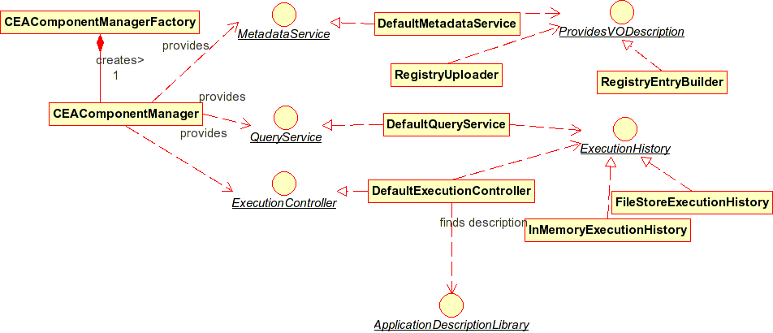

Top-level components of the cea server

There's an interface and default implementation for each of
- {@link org.astrogrid.applications.manager.QueryService} - allows clients to query progress / stratus of application executions, get results
- {@link org.astrogrid.applications.manager.ExecutionController} -- allows clients to create and control application executions
{@link org.astrogrid.applications.manager.MetadataService} - returns metadata describing this cea server